| table | tier | rows | columns | name | description |
|---|---|---|---|---|---|
| climatology | core | 768,880 | 11 | Climatology | The one seasonal baseline every CalCOFI anomaly is a departure from (calcofi4db::build_climatology(), release_database.qmd browser_objects). A plain mean of the env realm of obs per dataset × station (grid_key) × calendar month × 10 m floor depth bin × measurement type across the window stamped on every row (clim_yr_min–clim_yr_max, 1993–2013), kept only where at least 3 distinct cruises contribute. Calendar month because CalCOFI’s quarterly cruises give many years per month at a station but few days; 10 m floor bins (labelled by the shallow edge) because obs carries the thinned CTD series and 5 m off-grid bins sample only the profile’s inflection points. Partitioned by measurement_type. ctd-transects, the Explorer’s Sections lens and calcofi4r::cc_climatology() subtract this table; a cell that is absent has no baseline and its anomaly is blank, never zero. |
| cruise | core | 842 | 20 | Cruise | unique by ship and year-month |
| dataset | core | 16 | 24 | Dataset | |
| dataset_taxon | core | 1,917 | 7 | Dataset Taxon | Crosswalk from each dataset’s own taxon vocabulary to the global taxon_key. obs resolves its taxon by joining this on (dataset_key, ds_taxa_code), so a dataset can keep its local codes without leaking them into the shared model. |
| grid | core | 218 | 10 | Grid | CalCOFI survey grid polygons with standard and historical station patterns |
| lookup | core | 26 | 9 | Lookup | Unified vocabulary lookup table for egg stages, larva stages, and tow types |
| measurement_type | core | 200 | 22 | Measurement Type | |
| obs_attribute | core | 458,184 | 10 | Observation Attribute | Sub-occurrence attribution: the breakdown within an obs headline row. Covers numeric frequency distributions (length bins, stage numbers) and categorical breakdowns (seabird behavior). Counts here sum to the headline where the source is internally consistent. |
| obs_bio | core | 1,258,665 | 31 | Biological Observations | The bio realm of the observations — one row per taxon occurrence headline (count, density or biomass) with the gear and effort of its own sampling event inline (tow_type, std_haul_factor, prop_sorted, volume_sampled_m3), the two standardized densities (density_per_10m2, density_per_1000m3) and effort_class, qual_ok, root_id (→ sample_root), sample_key (→ sample, the net / tow itself), hex_id (H3 res 10) and hex7. A strict superset of obs’s bio rows under a name mapping (value = measurement_value, realm implied); obs is a view over this table and obs_env. One object (~26 MB), read whole by the CalCOFI Explorer. Depth is the observation’s, falling back to its sample’s span (a net tow) and its root’s. |
| obs_env | core | 25,006,583 | 31 | Environmental Observations | The env realm of the observations — one row per measured scalar (bottle, CTD headline series ctd_thin, DIC, METS, picoplankton) with the same columns as obs_bio (effort and taxon NULL), qual_ok evaluated, root_id (→ sample_root), sample_key (→ sample, the bottle / cast), hex_id and hex7. Hive-partitioned by measurement_type so one variable is one object (~4 MB median); obs is a view over obs_bio and this table. A strict superset of obs’s env rows under a name mapping (value = measurement_value). |
| region | core | 4 | 7 | Region | The 4 pooled regions defined on the CalCOFI grid (Hayward & Venrick 1998), with the member station codes the source declares and a POLYGON derived from them: each declared station claims the water nearest to it, clipped to the convex hull of all 34 stations and dissolved by region, so the four tile their pooled domain with no overlap and no gaps. Stations are placed by the +proj=calcofi transform rather than a grid lookup, which is what lets the six intermediate inshore stations with no cell in the regularized grid resolve. latitude/longitude is an interior representative point, not a centroid (the regions are concave). Land is not erased. See questions Q01. |
| sample | core | 1,469,155 | 21 | Sample | One row per physical sampling event at its native grain (site, tow, net, cast, bottle, underway, transect, region pool). An adjacency list: parent_sample_key points at the containing event and root_sample_key at the top of the chain, so counting distinct events at any level is a single GROUP BY. |
| sample_measurement | core | 589,603 | 6 | Sample Measurement | Event-level (effort) measurements: quantities that describe the sampling event itself rather than anything observed in it — net volume filtered, standard haul factor, proportion sorted, bottle cast conditions. Kept apart from obs so effort is never mistaken for an observation. |
| sample_spatial | core | 929,664 | 5 | ||
| ship | core | 49 | 7 | Ship | unique ship with many cruises |
| spatial | core | 13,206 | 5 | Spatial Layers | Geometries for ancillary spatial layers (CA jurisdictions NOAA boundaries marine protected areas etc.) keyed by spatial_key. Sourced from metadata/spatial_layers.csv. Companion to spatial_attribute. |
| spatial_attribute | core | 148,461 | 9 | Spatial Layer Attributes | Non-geometry attributes for features in spatial in long entity-attribute-value form (spatial_key layer fld and one typed val_* column). Allows attribute schemas to differ across layers without column proliferation. |
| taxon | core | 2,614 | 19 | Taxon | Taxonomic hierarchy for species via WoRMS and ITIS authorities (built from spp.duckdb via recursive CTEs) |
| taxon_group | core | 441 | 3 | Taxon Group | Portable groupings of taxa (phytoplankton functional groups, seabirds, marine mammals). Many taxa per group; a taxon may belong to several. |
| obs | deprecated | 26,265,248 | 18 | Observation | The occurrence-headline long table: one scalar measurement per row, environmental (realm = 'env') and biological (realm = 'bio') together. Biological taxon is the global taxon_key; sub-occurrence detail (length/stage bins, behavior) lives in obs_attribute, and event-level effort in sample_measurement. |
| obs_ctd_full | supplemental | 271,394,164 | 18 | Observation (Full CTD) | Supplemental full-resolution CTD scans, identical in shape to obs. Excluded from the default table list and the ERD because of its size; opt in with cc_get_db(supplemental = TRUE). The default obs carries CTD via the adaptively thinned ctd_thin. |
| obs_mets_full | supplemental | 19,927,416 | 18 | Obs Mets Full | |
| sample_root | supplemental | 421,454 | 14 |
4 Database
4.1 Conventions, in one line each
Names follow Naming conventions: singular lower-case tables, snake_case columns with a unit suffix where one applies, a geom column tagged EPSG:4326, one row per measured value. Keys follow Keys and integrity: a *_key is a string natural key, a *_id an integer, a *_uuid the provider’s own identifier kept as a column; cruise_key, sample_key, site_key/grid_key and taxon_key carry the integration, and every declared key is measured before a release ships.
4.2 The core data model
Sixteen source datasets — ichthyoplankton, zooplankton, bottle hydrography, CTD casts, DIC, underway meteorology, seabird and mammal transects, and more — used to reach the database as ~40 per-dataset tables. They now project into a small core family that every consumer reads. A dataset’s projection lives in its own ingest notebook (the generic shapes live in calcofi4db), so adding a dataset never edits a shared switch(). Figure 4.1 draws that family and the reference tables it joins to; Table 4.1 says what one row of each stands for.

| table | grain | tier |
|---|---|---|
sample |
one row per physical sampling event — site, tow, net, cast, bottle, underway record, transect, subsample, region pool — with the hierarchy as an adjacency list (parent_sample_key, plus root_sample_key for the top of the chain) |
core |
obs_bio |
the biological occurrence headline: one scalar per row for a taxon (taxon_key, life_stage, measurement_type, value) with its event’s gear, effort and the two standardized densities inline |
core |
obs_env |
the environmental headline: one measured scalar per row (measurement_type, value, measurement_qual, qual_ok), one parquet object per measurement type |
core |
obs |
the two above under one name — realm = bio or env, value as measurement_value — as a view the catalog carries; its own objects are deprecated |
view |
obs_attribute |
sub-occurrence detail — length- and stage-frequency bins (bin_value, bin_label, count) and categorical behaviour |
core |
sample_measurement |
event-level effort and conditions — a net’s volume_sampled and std_haul_factor, a cast’s surface observations |
core |
sample_root |
one row per root sampling event with the dense integer root_id the browser objects join on, its position, time, depth span, gear and seafloor depth |
supplemental |
obs_ctd_full |
full-resolution CTD scans (~271 M rows); obs_env carries the thinned series |
supplemental |
obs_mets_full |
full-resolution underway meteorology (~20 M rows) | supplemental |
Table 4.1 is the whole model in nine rows; Table 4.2 below is every table the release actually ships. An observation’s provenance is denormalized onto it on purpose: obs carries dataset_key, cruise_key, grid_key, the position, the datetime and hex_id (H3 at resolution 10, so coarser aggregations use h3_cell_to_parent(hex_id, res) rather than a column per resolution), so a rollup groups without a join. geom lives on sample and on the reference tables, never on obs.
4.2.1 What the release publishes: obs_bio + obs_env, and obs as a view
The assembly grain is obs; what the release publishes is the pair cut from it, because the questions consumers ask are shaped differently for the two realms:
obs_bio— one object, the bio realm, with the gear and effort of the row’s own sampling event inline (tow_type,std_haul_factor,prop_sorted,volume_sampled_m3) and the two standardized densities derived once (density_per_10m2,density_per_1000m3) pluseffort_class. One taxon question = one file.obs_env— one object permeasurement_type. One variable = one small fetch, which is what a browser-side reader (DuckDB-WASM cannot list a directory; the catalog gives it an explicit file list) actually needs.
Each is a strict superset of obs under a name mapping — realm is implied by which table you read, and value is measurement_value — and obs itself is a view the catalog carries (catalog.json → views.obs), a UNION ALL over the pair under obs’s original column names. calcofi4r::cc_get_db(), calcofi4py and the query site create it from the catalog, so FROM obs keeps working. Two consequences worth knowing:
- The release proves the pair reproduces
obsbefore it freezes — row counts, distinctobs_ids and a hash signature of every column, per realm × dataset. The one allowed difference is a depth fallback: a bio row with no depth of its own carries its tow’s span. obs’s physical objects still ship for one release, markeddeprecatedin the catalog withreplaced_by: ["obs_bio", "obs_env"]. Migrate to the pair — a consumer reading the view needs no change, a consumer building a path toobs.parquetdoes.
Do not rename value, root_id or hex7 on the pair; new columns are appended and the view maps names, so consumers never have to.
4.2.3 Every table in the release
The full inventory — what a database client’s object browser would list — read from the promoted release’s catalog.json and metadata.json. A supplemental table is hosted and catalogued but left out of cc_get_db()’s default set; a deprecated one still ships its objects for one release while its replacement is named.
4.2.4 Taxonomy
Three shared tables replace the ~7 per-dataset taxon tables:
taxon— one row per taxon:taxon_key(worms:<AphiaID>, oritis:<TSN>when the taxon’s class is Aves, because WoRMS bird taxonomy lags), the cross-reference ids (worms_id,itis_id,gbif_id),parent_taxon_key,rankandrank_order, the flattened lineage (kingdom,phylum,class,order_taxon,family),scientific_name,common_name, andtaxonomic_statuswithstatus_checked— read the two together; a status with no check date is not a fact.dataset_taxon— the per-dataset vocabulary →taxon_keycrosswalk.obsresolves itstaxon_keyby joining this on(dataset_key, ds_taxa_code), andds_source_jsonrecords whatever ids the source itself supplied, so the source and the authority can be audited against each other.taxon_group— groupings for rollups.
Two distinctions that cost real data before they were written down. The key authority and the cross-reference columns are different questions: a bird keys itis: and carries a worms_id, because a consumer joining on worms_id would otherwise match zero seabirds. And a key must be an accepted id while a cross-reference is whatever the authority links — a deprecated TSN is re-keyed onto its accepted successor and the event is recorded in taxon.notes.
When asserting lineage coverage, split by rank position: family is legitimately NULL above family rank, and kingdom is NULL for worms:1 Biota. A blanket non-NULL assertion is wrong, and someone will “fix” it by inventing data.
4.2.5 Quality flags reach consumers only if consumers apply them
obs.measurement_qual is each dataset’s own vocabulary, uninterpreted — bottle 6 = ok-from-CTD, 8 = suspect, 9 = missing; CTD 1/2 = use primary/secondary sensor, 8 = questionable, 9 = bad; DIC follows WOCE (2 good, 3 questionable, 4 bad, 9 missing). The registry is metadata/measurement_qual.csv in the workflows repo and it ships in metadata.json.
In August 2026 a 2.18 ml/L oxygen spike at 1,144 m turned out to be a bottle flagged suspect in the source since 1955 — it reached a plotted app because no consumer filtered on the column. There is now one predicate per language — calcofi4r::cc_qual_ok_sql(), calcofi4py.qual_ok_sql(), the query site’s qualOkSQL() — NULL-safe, so an unflagged row is kept. Apply it. A value with a flag you do not read is not a value you can trust.
4.2.6 Depth is a coordinate, and it is bounded as one
Every released depth is finite, non-negative and no deeper than 6,500 m, on obs, on sample and on the supplemental tables; a violation fails the release rather than shipping. Separately, sample.seafloor_depth_m carries the GEBCO 2025 sea-floor depth at the sample’s position (positive down, 0 on land, NULL outside the raster) so a consumer can judge a deep sample without fetching a raster. Where a sample’s deepest attributed depth exceeds the deepest GEBCO cell near it, that is reported and ratcheted, never deleted: nearly all such cases are minute-rounded 1949–1975 positions on slopes and canyons — the measurement is fine, the place is imprecise.
4.3 Integrated database ingestion strategy
4.3.1 Overview
The integrated database is built by the CalCOFI/workflows pipeline: one ingest_{provider}_{dataset}.qmd notebook per dataset (orchestrated by targets, engine functions in calcofi4db) writes Parquet shards plus JSON sidecars; release_database.qmd assembles them in an in-memory DuckDB, validates, and freezes a versioned, immutable release on public Google Cloud Storage (next section). Consumers — the apps, calcofi4r::cc_get_db(), the schema and query sites — read the release as Parquet over HTTPS with no credentials.
Alongside the releases stands a PostgreSQL database (calcofi, PostgreSQL 18 + PostGIS 3.6 on the CalCOFI server) built as a working, multi-user store for the CTD team’s QA/QC: originals loaded verbatim and immutable, a flag/proposal ledger beside them, derived products on top. It is available but not yet adopted — the team’s flags still arrive with the provider’s files — and no part of the pipeline reads it live in either case; the bridge is a nightly parquet snapshot (CTD QA/QC). It is private and reached over SSH — see Server Access. DuckDB’s postgres extension joins the two worlds in one query (calcofi4r::cc_pg_attach()). (An earlier design ran the whole database in PostgreSQL with dev/prod schemas and a single create_db.qmd; that is superseded and only the legacy gis database remains, behind tile.calcofi.io.)
4.3.2 Release versioning
A release is an immutable, versioned copy of every table under gs://calcofi-db/ducklake/releases/{version}/, described by its catalog.json, content-addressed, with a DOI per version and one concept DOI for all of them. What ships, which versions are kept, how to pin one and what is checked before a release is cut are in Releases.
4.3.3 Metadata registries — the single sources of truth
Descriptions, vocabularies and provenance live as reviewable CSVs in CalCOFI/workflows — not in the database — so they travel with the code that produced them and change through pull requests.
Per dataset, under metadata/{provider}/{dataset}/:
tbls_redefine.csv—tbl_new,tbl_descriptionflds_redefine.csv— the crosswalk from every source column to its standard name and type (Naming conventions)metadata_derived.csv— optional markdown/units overlay for derived tables and columnsquestions.csv— the provider-question registry: what we have asked the data’s owners, what they answered, and what we have proposed an answer to and want confirmed. Each question has a durable globalidand a short per-datasetlabel(Q15), astatus(open/proposed/answered/wontfix) and apriority.dataset_meta.yml— the descriptive half of the dataset’s metadata: abstract, methods, creators, citation, licence, DOI, contact, keywords (Metadata & the ingest loop)citation_authority.json— a generated cache of what the source’s own authority (EDI, NCEI, ERDDAP, DataCite) says about the citation and licence. A proposal, never the record.
Shared, under metadata/:
metadata/ in CalCOFI/workflows, and what each is the record of.
| file | role |
|---|---|
field_dictionary.csv |
Prescriptive canonical field names, types, units and aliases; new datasets conform to it. dwc_term names the Darwin Core term a field publishes as. |
measurement_type.csv |
The canonical measurement vocabulary — description, units, category, variable (which types measure the same thing comparably across datasets), derivation for a derived type, is_canonical, the validity bounds, and the controlled-vocabulary ids nerc_p01 / units_nerc_p06 (below). Released as a table. |
measurement_qual.csv |
Each dataset’s quality-flag vocabulary, uninterpreted. |
category.csv |
The twelve data categories every dataset and measurement type is filed under. |
provider.csv |
The curating organizations. provider is the organization that holds and can license the data — not the portal that serves it, and not a collection or lab inside it. |
license.csv |
The licence ids a dataset may declare. |
life_stage.csv |
Every distinct obs.life_stage value with its Darwin Core label and NERC S11 id. |
gear.csv |
Every sample.tow_type code with its samplingProtocol sentence and NERC L22 device id. |
dataset_meta_fields.csv |
The tiers of authored dataset metadata (required, recommended, optional) and the guidance a provider sees for each; the field list every dataset_meta.yml follows. |
dataset_status.csv |
The pipeline-stage tracker, one row per dataset, and each dataset’s archive-of-record policy sentence. |
distribution.csv |
Every curated endpoint per dataset the release cannot measure itself — mirrors, archive records, the OBIS dataset, legacy ERDDAP ids with their successors — never deleted, only statused. |
distribution_observed.json |
Generated weekly: what each portal says now about every distribution; a change files a proposed provider question, never an edit. |
portal.csv |
The portals themselves — what each holds, how it can be queried, what it harvests from calcofi.io (Portals). |
holdings.csv |
Generated at release: the datasets CalCOFI holds but has not ingested, from their sidecars. |
taxon_group.csv |
The rules that assign taxa to the groups the apps offer (functional groups, “other”); a group label never becomes a taxon’s common name. |
questions_sheets.yml |
Which Google Sheet each provider’s questions and metadata tabs live in (Metadata & the ingest loop). |
relationships_cross.csv |
Cross-dataset foreign keys (intra-dataset ones live in each ingest’s relationships.json); every edge is measured at release (Keys and integrity). |
release_tables.csv, release_columns.csv |
Descriptions for tables built inside release_database.qmd itself. |
measurement_taxon.csv, taxon_override.csv |
How a taxon-bearing measurement name decomposes, and manual id resolution where a source taxon has no clean id. |
taxon_lineage.csv, taxon_xref.csv |
Generated caches of the WoRMS/ITIS classification chains and the WoRMS↔︎ITIS cross-reference. Safe to delete; they refetch. |
dataset.csv |
Deprecated. A dataset’s structural keys are the calcofi: YAML block in its ingest notebook; its descriptive metadata (abstract, citation, license, DOI, contact, …) is the metadata/{provider}/{dataset}/dataset_meta.yml sidecar, and the release reads the two merged (see Metadata & the ingest loop and Cite This Data). The CSV drifted from the notebooks and orphaned observations. |
The per-dataset files above and the shared registries of Table 4.3 flow through two stages:
Per ingest:
calcofi4db::build_metadata_json()writesdata/parquet/{provider}_{dataset}/metadata.json(schema version 1.0) beside the parquet outputs, and reports its own documentation gaps.Per release:
calcofi4db::merge_metadata_json()merges every per-ingest sidecar plus the release-only registries intogs://calcofi-db/ducklake/releases/{version}/metadata.json(schema version 1.2):{ "schema_version": "1.2", "release_version": "v2026.09.06", "release_date": "2026-09-06", "datasets": { "calcofi_bottle": { ... } }, "tables": { "sample": { "name_long": "Sample", "description_md": "One row per physical sampling event …", "provider": "swfsc", "dataset": "ichthyo" } }, "columns": { "sample.depth_min_m": { "name_long": "Depth Min", "units": "m", "data_type": "DOUBLE", "description_md": "Shallowest depth of the event" } }, "measurement_types": { "temperature": { "description": "...", "units": "degC", "is_canonical": true } }, "contributions": { "sample": { "swfsc_ichthyo": 0.62, "calcofi_bottle": 0.31 } }, "erd_legend": [ { "provider_dataset": "calcofi_bottle", "color": "#f5cad9" } ] }
contributions is each dataset’s share of a shared table’s rows (the bar on a schema-browser card); erd_legend the colour each dataset takes in the diagram.
Markdown is supported anywhere in description_md; consumers should render it through a markdown parser when displaying.
4.3.4 Coverage is measured, never asserted
A dataset’s temporal and spatial extent is measured from the assembled data at release time — coverage_temporal_observed, coverage_spatial_observed and coverage_bbox in metadata.json, and coverage_temporal / coverage_spatial on the released dataset table (the measured values, under the plain names). Nothing hand-writes an extent.
This is not pedantry. A hand-written extent is authored once while the data grows underneath it: at v2026.08.06 seven of fifteen datasets were wrong — one claimed data through 2021-05 that ends 2015-04, three said “present” while stalling in 2019, 2022 and 2023. Measurement is also honest about what it finds, which is how two coordinate bugs surfaced that the prose had hidden (a dropped minus sign putting a dataset at 124.9° E, and a dataset reaching latitude 0.0). One dataset asserts its temporal half and says why in a comment: it is region-pooled and has no datetimes at all.
4.3.5 Citation and licence are a contract, and they are checked
Every dataset carries citation_main, license, doi, acknowledgement and contact in its dataset_meta.yml sidecar, and these are checked, not trusted — by the workflows index build and again by the release. A citation needs a year and a locator; license must be an active id in license.csv (custom requires a license_url; unknown or empty fails unless a provider question is open on that field); a doi is stored bare and must resolve. The check also asks the source’s own authority — EDI’s cite service, NCEI’s “Cite as”, an ERDDAP .das, DataCite — caches the answer, and reports drift without ever writing into the notebook: the author’s string is the record.
source_accessed is measured, not authored. And the release cites itself: catalog.json carries a citation, a concept_doi and, once minted, the version doi; the release notes open with “How to cite”; CITATION.cff and .zenodo.json are generated from the same source.
CalCOFI (2026). CalCOFI Integrated Database, release v2026.09.06 [Data set].
Scripps Institution of Oceanography, NOAA Fisheries, and California Department
of Fish and Wildlife. https://doi.org/10.5281/zenodo.22514953(That is the release promoted as this page was written; the current one is in catalog.json and on Cite This Data.)
When you use these data, cite the release and the source datasets you used. The release dataset table carries each source’s own citation_main, license, doi and acknowledgement for exactly this purpose — one row per dataset, so a query that touched dataset_key already knows whom to credit.
4.3.6 Consuming descriptions
The fastest way to browse the schema is the CalCOFI Schema explorer — per-release ERD, sortable table/column lists with units, dataset provenance, and the measurement-type registry, all sourced from the release metadata.json sidecar on GCS. Deep-link to a specific release with #erd?v=v2026.08.25 (or #tables, #columns, #measurements).
From R, fetch the descriptions either column-by-column or as a full interactive catalog. Both calls hit the same release metadata.json sidecar:
library(calcofi4r)
# schema + descriptions + units for a single table
tbl <- cc_describe_table("sample")
attr(tbl, "description_md") # table-level description
# interactive datatable of every table and column in the release
cc_db_catalog()
cc_db_catalog(tables = c("sample", "obs_bio"))
cc_db_catalog(version = "v2026.08.25")When writing a new ingest, populate tbls_redefine.csv and flds_redefine.csv (especially fld_description and units) before running the ingest notebook — build_metadata_json() reads them directly. The Claude Code /generate-metadata and /validate-ingest skills enforce this.
4.3.7 Publishing to portals
Workflows in workflows/publish_to-*.qmd push selected tables to external portals — ERDDAP, EDI, OBIS — and write netCDF for the archives. They read the release catalog.json and metadata.json to assemble Ecological Metadata Language (EML), ERDDAP datasets.xml entries and netCDF attributes, so a description written once in a metadata registry reaches every portal without re-keying, and so no publish notebook builds a parquet path by hand.
The netCDF, ERDDAP, EDI and OBIS publishers are all generic — parameterised by dataset, driven by the release; the OBIS one (publish_to-obis.qmd, 2026-09-05) retired the per-dataset ichthyoplankton notebook. See Darwin Core / OBIS ENV-DATA mapping for what it reads, and Portals for the publishing steps.
ERDDAP (publish_to-erddap.qmd) discovers one config block per dataset_key from what the core actually holds, rather than a hand-maintained table list, and executes every view against the real release before writing its XML. Since the pre-release plan D-S1/D-S3 (2026-09) the {dataset_key} observation grain reads obs_bio (bio datasets) or obs_env (env datasets) through the release catalog (calcofi4r::cc_release_sources()) — never a hand-built releases/{v}/parquet path — carrying the sample’s own gear and effort (tow_type, std_haul_factor, prop_sorted, volume_sampled_m3) and the two canonical densities (density_per_10m2, density_per_1000m3, effort_class) inline, plus flag_values/flag_meanings on measurement_qual from metadata/measurement_qual.csv. A release cut before D-S1 (no obs_bio/obs_env in its catalog) falls back to the deprecated obs objects, with no effort/density columns.
4.4 Darwin Core / OBIS ENV-DATA mapping
The core model was designed against the OBIS ENV-DATA pattern described by De Pooter et al. (2017), so the shapes map one to one: sample’s adjacency list is an Event core, obs’s bio rows are an Occurrence extension, and the two measurement grains are extended Measurement-or-Fact tables. What was missing was never the shape — it was the vocabulary: an export had to guess which controlled term a CalCOFI measurement name meant, and the ichthyoplankton OBIS notebook did not guess, it wrote measurementTypeID = NA.
The ids now live in the registries the release already publishes, so a portal export is a lookup rather than a judgement.
| CalCOFI | Darwin Core / OBIS ENV-DATA | how it is constructed |
|---|---|---|
sample (adjacency list) |
Event core | eventID = sample_key; parentEventID = parent_sample_key; eventDate from datetime (a tow publishes as its start/end interval); decimalLatitude / decimalLongitude; minimumDepthInMeters / maximumDepthInMeters = depth_min_m / depth_max_m; footprintWKT from geom; locationID = site_key; samplingProtocol from metadata/gear.csv keyed on tow_type; sampleSizeValue = volume_sampled_m3 with sampleSizeUnit = cubic metre |
obs_bio (obs where realm = 'bio') |
Occurrence extension | occurrenceID from obs_id; eventID = sample_key; scientificNameID built from taxon_key (urn:lsid:marinespecies.org:taxname:<worms_id>, or the ITIS TSN for a bird); scientificName from taxon; lifeStage + its NERC S11 id from metadata/life_stage.csv; organismQuantity = density_per_10m2 or density_per_1000m3 with organismQuantityType naming that denominator |
sample_measurement |
eMoF on Events (net effort, cast conditions) | measurementType / measurementValue / measurementUnit, plus measurementTypeID = measurement_type.nerc_p01 and measurementUnitID = measurement_type.units_nerc_p06 |
obs_attribute |
eMoF on Occurrences (length and stage frequency) | bin_value / bin_label / count → measurementValue; ids as above |
obs_env (obs where realm = 'env') |
eMoF on the bottle or depth Event | ids as above |
Every row of Table 4.4 is a lookup in a registry the release already publishes, not a judgement made at export time. metadata/field_dictionary.csv carries a dwc_term column holding the full term URI for the 12 of 57 canonical fields that one Darwin Core term means exactly. A field Darwin Core splits — depth_m becomes minimumDepthInMeters and maximumDepthInMeters — or has no term for is deliberately left empty rather than mapped approximately.
4.4.1 An id is filled only on an exact match
Empty means “no concept in the vocabulary says exactly this”, never “nobody looked.” An id is written only when every facet the concept states — quantity, matrix, phase, method — is something the registry or the dataset’s documented protocol actually supplies. A generic concept is an exact match at coarser specificity: NERC P01 TEMPPR01, Temperature of the water body, is exactly what a QC’d bottle temperature is. A concept that adds a facet nobody recorded is not: IRRDUV01 pins PAR to a cosine-collector radiometer, which no CalCOFI metadata states, so PAR has no id.
Filling an id you are not sure of is worse than leaving it empty. An empty measurementTypeID is a portal record that says “this measurement is not mapped”; a wrong one is a record that confidently says the wrong thing, at an aggregator that will never ask.
Coverage as of v2026.09:
| registry | column | filled |
|---|---|---|
measurement_type.csv |
nerc_p01 (P01, measurementTypeID) |
115 / 200 |
measurement_type.csv |
units_nerc_p06 (P06, measurementUnitID) |
174 / 200 |
life_stage.csv |
nerc_s11 (S11, lifeStage) |
10 / 23 |
gear.csv |
nerc_l22 (L22, samplingProtocol device) |
4 / 11 |
field_dictionary.csv |
dwc_term |
12 / 57 |
The gaps in Table 4.5 are deliberate, and mostly not gaps. Of the 85 measurement types with no P01, 29 are taxon-bearing abundance, biomass or size types — P01 encodes the taxon in the concept, and CalCOFI carries it in taxon_key, so a per-type id there would be wrong rather than missing. Another 8 are event-level effort and sub-occurrence attributes BODC does not model as parameters. The genuine gaps are documented in RELEASES.md, and most of them are questions for a data provider rather than for the vocabulary: an unrecorded transmissometer wavelength, radiation channels that do not say whether they are upwelling or downwelling, flow-cytometry gating that was never written down.
4.4.2 Three caveats for anyone building an export
obsis positive-only for ichthyoplankton. A tow that was sorted and found nothing has no row, sooccurrenceStatus = "absent"cannot be derived from zero values. Absences come from the sampling events (sample, root rows) minus the taxa observed on them — and a surveyed year with no positives is indistinguishable from an unsurveyed year if you count rows instead of events.organismQuantityTypeis the whole meaning of the number. Areal (individuals per 10 m², from an oblique or vertical tow standardized by the haul factor) and volumetric (individuals per 1000 m³, from a surface Manta tow or any tow with a filtered volume) are not interconvertible without an integrated depth and a vertical-distribution assumption. Publish the denominator with the number, never a bare count.- Two
life_stagevalues are not life stages. Euphausiiddamagedmarks specimens too damaged to stage (occurrenceRemarks), and ichthyoplanktoninvertis a provenance flag for the merged invertebrate counts.metadata/life_stage.csvsays so per value; do not pass either through aslifeStage.
The generic publish_to-obis.qmd over the core reads exactly these registries; it replaced the per-dataset ichthyoplankton notebook on 2026-09-05 (see Portals).
4.5 Relationships between tables
Primary and foreign keys ship with every release as relationships.json beside catalog.json, and since 2026-09-08 every one of them is measured before the release is cut and the result ships as integrity.json. The keys, the joins worth memorising and the measured result are in Keys and integrity; the schema browser draws the diagram per release.
4.6 Spatial Tips
Use
ST_Subdivide()when running spatial joins on large polygons.All released geometry is tagged
EPSG:4326, normalized immediately before the freeze. This matters becauseST_Point(lon, lat)tagsOGC:CRS84whileST_Read()over GeoJSON tagsEPSG:4326— the same WGS 84 longitude/latitude — and DuckDB refusesST_Intersectsacross differing tags. If you build geometry on one side of a join, tag both sides; do not coerce one to match the other, or the next release will break you.NaNis notNULL, and it corrupts spatial queries beyond its own row. ANaNcoordinate survivesIS NOT NULL, andST_Point(NaN, NaN)returns a real, non-NULL geometry that survivesgeom IS NOT NULLtoo. Worse, its presence makesST_Intersectsreturn different counts at different thread counts, dropping valid, unrelated pairs. The release normalizesNaN/InftoNULLbefore minting geometry — but if you build your own, testisnan()andisinf()explicitly.